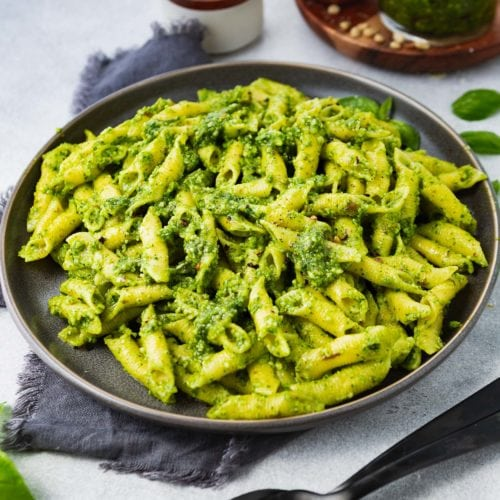

ODIN RECIPES

ODIN RECIPES |
|
PESTO PASTAImpressive meals don't have to take hours and hours in the kitchen. Take this beautiful pesto chicken pasta, for example, which is ready in just 30 minutes! You only need a handful of ingredients to make the fresh, from-scratch pesto. Its bright flavor is the highlight of this super-fast pesto pasta recipe, packed with cherry tomatoes and chicken.
|
Ingredients: PESTO
PASTA
|
Method:
|